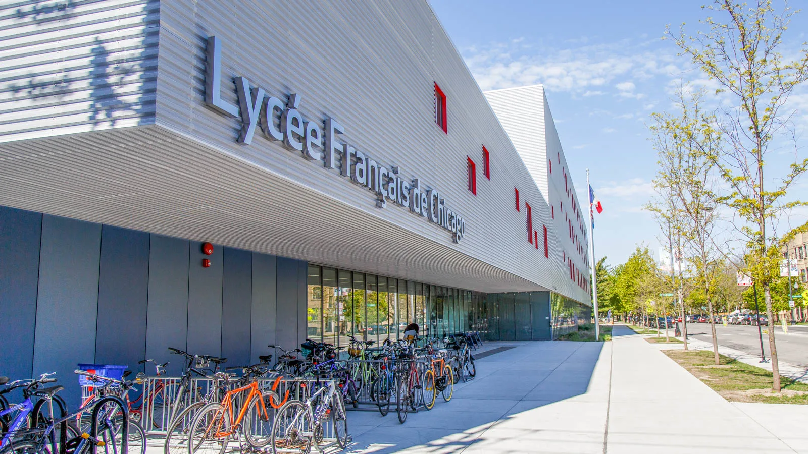

Une des écoles qui participera aux jeux de la ZAN de Québec, en juin, est le Lycée français de Chicago. Mais que sait-on sur Chicago, la ville abritant cette école ?
Et qu'est-ce que le lycée français de Chicago?
Chicago, avec ses plus de 2,7 millions d’habitants et ses 606 km² de superficie, est la troisième plus grande ville des États-Unis, la première du Middle West et la troisième plus peuplée du pays, juste derrière New-York et Los Angeles. Elle se situe dans l’Illinois, sur la rive Ouest du lac Michigan, l’un des cinq fameux grands lacs intérieurs, ce qui fait d’elle le plus grand port intérieur du monde. En plus de son impressionnant palmarès, sa position géographique permet d’importants échanges entre l’est et l’ouest des É-U, jouant ainsi un rôle essentiel dans l’économie, la culture et le transport américain. De plus, le relief de la ville est relativement plat, ce qui a facilité son développement urbain. En effet, Chicago ressemble à une encyclopédie d’architecture contemporaine à ciel ouvert. D’immenses buildings dominent le centre-ville, où il est possible d’accéder à deux tours immenses ; la Willis Tower (442 mètres), et plus au Nord, le John Hancock Centre (344 mètres).

Avant même que Chicago ne soit créée, la région était recouverte par les eaux, et des populations amérindiennes y vivaient, tels que les Potéouatamis. Cependant, la région était un pôle stratégique évident qui devint bientôt le terrain d’affrontements entre les grandes puissances européennes. Après la venue d’explorateurs en 1674, les Français puis les Britanniques prirent tour à tour possession de la région, aujourd’hui connue sous le nom de l'Illinois. La ville de Chicago fut ainsi fondée en 1770. La région est ensuite vendue à la jeune fédération américaine, en 1803. Au milieu du 19ème siècle, le chemin de fer Galena & Chicago Union Railroad est construit, et relie Chicago, Clinton et Freeport. Chicago atteindra son premier million d’habitants dès 1890 ! La ville se développe et devient rapidement un grand centre industriel. On assiste à la construction de bâtiments modernes et à l’invention des gratte-ciel. Au début du XXe siècle, la ville attire des vagues d’immigrants venus d’Europe, ainsi que des Africains-Américains du Sud. Cette diversité forge l’identité culturelle de Chicago. Pendant les années 1920, durant la Prohibition, Chicago devient tristement célèbre pour ses gangs mafieux, marquant la montée de la violence et de la corruption. Après la Seconde Guerre mondiale, la ville se réinvente grâce à la finance, la recherche, l’architecture et la culture, en devenant notamment un berceau du blues, du jazz, puis de la house music. Aujourd’hui, elle rayonne par sa richesse artistique, ses universités renommées, son architecture emblématique et ses équipes sportives légendaires.
Chicago est une destination touristique majeure qui attire des millions de visiteurs chaque année grâce à sa richesse culturelle et à la diversité de ses activités. Métropole américaine par excellence, marquée par l’histoire de la prohibition, la ville est une plateforme culturelle de premier plan, truffée d’œuvres d’art à tous les coins de rue, qui possède près de 200 théâtres et 46 musées exceptionnels (où sont exposés Picasso, Chagall ou encore Calder). La musique y occupe aussi une place importante : l’orchestre symphonique de la ville est considéré comme l’un des meilleurs au monde. Le week-end se prête plutôt à la visite des musées, dont le célèbre Art Institute of Chicago, le Museum of Contemporary Art (MCA), l’American Writers Museum, mais aussi le Museum Campus, situé dans Grant Park au bord du lac, et qui regroupe l’Adler Planetarium & Astronomy Museum, le Field Museum et le Shedd Aquarium. À Chicago, le sport compte de nombreuses équipes professionnelles. Chicago est l'une des onze villes américaines à accueillir des équipes des cinq principaux sports professionnels américains : baseball (Cubs, 3 titres de World Series), football américain (Les Bears, 8 championnats NFL), basketball (Chicago Bulls, 6 titres de finale NBA) hockey (Blackhawks de Chicago, 6 titres de Coupe Stanley) et football (NASL, 2 titres de Soccer Bowl). Chicago a été nommée « Meilleure ville sportive » par Sporting News à trois reprises : en 1993, 2006 et 2010. Les Chicagoans ont donc sans aucun doute un grand esprit de compétition !
| Catégories | Activités |
| Culture | Visiter « L’Art institute of Chicago » ou le « Museum of Science and industry », et visiter les ravissants quartiers de Chicago (Lincoln Park). |
| Architecture | Visiter la Willis Tower |
| Loisir en plein air | Se promener au Millenium Park, pour découvrir la sculpture grandiose «The Bean» |
| Sports | Voir un match des Chicago Bulls (NBA), des Bears (NFL), des Cubs (MLB) ou des Blackhawks (NHL) |
| Shopping | Magasiner dans le ravissant quartier « The Magnificent Mile » |

Le Lycée Français de Chicago, fondé en 1995, est une école bilingue accueillant des élèves de la maternelle jusqu’au lycée. Situé dans le quartier de Ravenswood, cet établissement privé, qui fait partie de l'AEFE, offre un cadre lumineux et spacieux, conçu pour favoriser un environnement d’apprentissage innovant et multiculturel. Cette école accueille une communauté internationale dynamique d’environ 800 élèves issus de plus de 30 nationalités, qui suivent un programme combinant les exigences académiques françaises et américaines. Ce lieu est bien plus qu’un établissement scolaire : c’est un pont entre les cultures, formant des citoyens du monde.
Cette école est aussi réputée pour le sport ! En effet, elle possède une grande équipe sportive très douée, les Flames. Les élèves peuvent ainsi pratiquer le basketball, le football, le volleyball, le cross-country, ou encore le yoga... Ces activités permettent aux élèves de développer leurs talents, de renforcer leur esprit d’équipe et de s’épanouir au-delà de la salle de classe. En mars 2025, le Lycée Français de Chicago a organisé un tournoi de basket-ball mémorable réunissant 16 autres écoles françaises et 29 équipes de collégiens et collégiennes, soit 320 participants. Cet événement, organisé dans le cadre du réseau AEFE, a permis aux élèves de vivre trois jours de compétition intense. Les équipes des Flames ont montré un excellent esprit d'équipe : ils ont décroché le titre de champions d'Amérique du Nord de basket, une grande première dans l'histoire des Flames !

Finalement, le Lycée Français de Chicago offre une large gamme d’activités extrascolaires, allant des arts plastiques au théâtre, en passant par la musique et la robotique. Bref, il s’agit d’un lycée très épanoui. Des élèves de CM2 et de 6ème de ce lycée vont donc venir au Collège Stanislas de Québec, du 1er au 6 juin, pour participer aux jeux de la ZAN (zone Amérique du Nord) et affronter ainsi plusieurs écoles d'Amérique du Nord. Les jeux de la ZAN consisteront en des jeux multisports tels que le flag rugby, l'ultimate frisbee et l'athlétisme, et se termineront par un rallye culturel dans le vieux Québec. Les élèves de Chicago sont donc impatiemment attendus à Québec pour la compétition. Bonne chance à eux!